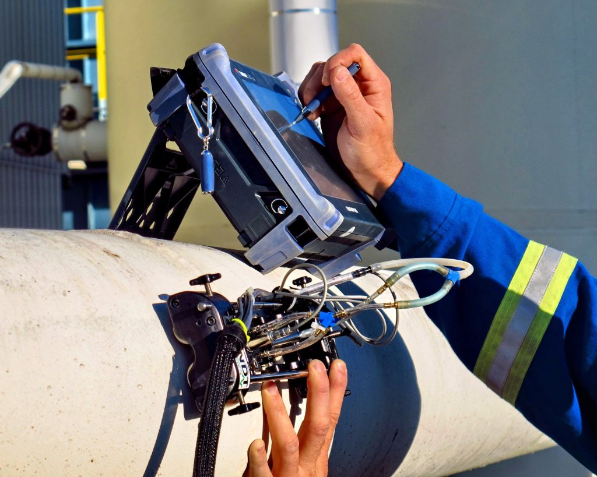

At INTERNATIONAL INSTITUTE OF PAUT NDT, we provide reliable Time of Flight Diffraction (TOFD) inspection services for accurate weld defect detection and sizing.
Weld Defect Detection:
Identifying cracks, lack of fusion, incomplete penetration, and other weld defects.
Accurate Defect Sizing:
Providing precise measurement and characterization of flaws.
Pipeline Inspection:
Inspecting pipelines and process piping systems for critical defects.
Pressure Vessel Examination:
Ensuring the safety and reliability of pressure-retaining equipment.
Digital Inspection Reporting:
Delivering detailed inspection data and permanent digital records for quality assurance.